西藏、本教、密教、喇嘛教
冯冯
Wang Jian Jun / 誊录
西藏密法在国际上是最有吸引力的法门，西方人趋之若鹜，藏密研究的文献，充斥市场与世界各处学府图书馆。相较之下，中国佛教显宗的外文文献，就少得可怜，不及密藏文献的百分之一！藏密道场信徒以西方人为大多数，显教道场的西方信徒绝无仅有，仍以华人为多。藏密已经普及了全世界，中国显教仍然只能流行于华人华语圈子，走不出唐人街。
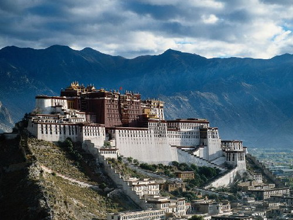西藏，自古以来就是一个大神秘。在那万重 雪峰上面不知有多少难解的谜。古代交通困难，难窥其奥秘，现代已有喷气客机直达拉萨，外人得以渐渐了解西藏。但是，也只是浮面与片面，难以深入西藏佛教经藏与修法。
是什么缘故？要解答此一问题，颇为困难，必须从许多角度来予以检讨，它并不只是“神秘”两个字那么简单。
本篇不妨先从历史背景来认识西藏佛史，作为研究的一个开端，不过本文只是概念，不是学术性的论文。
西藏古名吐蕃，又称吐鲁蕃，到唐代时仍称吐蕃，现代西藏之原名亦仍为吐蕃，英文之音译为( TIBET ) ，西藏之名是由近代中国朝廷所改。一九三O 年代，英人作家米尔顿名著《失去的乐园》 描写香格里拉，即是指西藏的喜马拉雅山地带。由此书所述的香格里拉仙境而引起全世界的兴趣，各国学者纷纷前往西藏探险研究，蔚然成风，于今尤烈。关于西藏研究之论着，不下五千种之多，成为特殊之一门学问，名为“西藏学”，堪可相比“埃及学”。反数中国人对西藏之研究论着，稀少得可怜，有如凤毛麟角，而且多从参考外人著作而来，直接研究的绝无仅有，像上面引用的参考文献，就是从日本获得的。
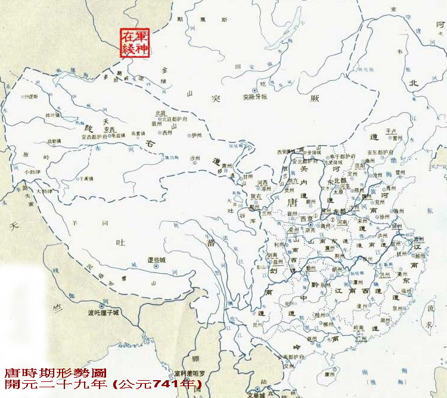
佛教并不是西藏原有宗教，佛教是从外国传入西藏的。在佛教传入西藏之前，西藏本来就有土著的宗教，名叫“本教”（音译藏文成为BON-PO , 汉文一向译为苯教，又讹传为笨教，或称黑教，均有歧视之意，我认为不公，因此改译为“本教”，以示是本来之宗教，如此较为公允）。
“本教”是西藏西部象雄（地名）地区源起的，创教人名叫贤若米保，它原是倭毛垄仁地方人氏（转录者注：大食之倭毛垄仁vol-movi-lung-rings），根据《 西藏王统世系明鉴》 （藏文萨迦喇嘛原着，此处参考商务印书馆出版一九四九年版和文译本）第廿五至廿六页：
“在吐蕃的布带筑杰赞普之时，已有卍字本教，教主名叫贤若米保，出生于大食国之倭毛垄仁。他将天界八部演绎，从象雄开始弘扬教法，共分九派──‘因’ 乘四派，‘果’ 乘五派。‘果’乘五派以卍字为无上乘，能得超天界之身；‘因’乘四派重于求福，祷神乞药，求兴旺吉祥；息灾祛病，护国奠基，指善决疑；为生者消灾，为死者安葬，为幼者驱鬼；上观天象，下降妖魔，祈福祓禳……。
意大利学者奈见斯基所作（西藏的鬼怪与神灵》一书说，西藏原民缺乏科学知识，对于大自然的一切现象都视为是神灵的作为，风尔雷电雪雹、地震山坍雪崩、水旱灾祸、瘟疫疾病，莫不是神灵或鬼怪的法力造成，木石万物无不有“灵”。原民为求平安，就兴起了对大自然的万神的崇拜，这种原始的祈神宗教，是“本教”的基础。
“大食国”，即是阿拉伯帝国，最强盛时占有亚洲西部至非洲北部及现在的西班牙。阿拉伯帝国强盛时，航海发达，军力强大，商团远及中国中原及南方。阿拉伯人贤若米保（音译自阿拉伯人名）何时来到西藏，已不可考，相信是在阿拉伯国力最强大之时。从中亚细亚取道来到吐蕃的象雄，探用了原民的大自然迷信而创立他的“本教”，或者将原有的地方性“本教”予以发扬而成为有体系的“本教”，因教徒穿黑衣，故世称为“黑教”。
藏人著作《 宗派源流晶鉴史》 （拉萨版），第九章引述藏人喇嘛桑结嘉索著作“白琉璃”文学，说阿拉伯人贤若米保是佛陀之化身，于象雄之地，意欲驯化土人，乃变化现身为贤若米保，示十二本行，说因果九乘之教法，为生者开天门，为死者断丧门。他这些因果九乘，是否多少受到印度原始佛教影影响？抑或是他独创？殊难判断。不过，因果学说，自古已有，并非佛教独有，此点必须注意。其他宗教都各有其因果观点，只是未必与佛教的因果学说相同。
“本教”的巫术、神通、符咒迅速获得吐蕃全境人民的信仰，进而征服了贵族阶层与统治的王朝，历时甚久，可能有五百多年，难以查考。不过根据公元一三八八年成书的萨迦喇嘛索那圣参在他的著作《吐蕃（西藏）王统世系明鉴》 中说：“吐蕃王统从聂墀赞普起，至拉脱脱日年赞普，凡二十七代君主，五百余年之间，诸王均与佛教无关。”
另外，布顿仁铊珠（生存于公元一二九O 至一三六四年，英译藏音名字：BU-STON-RIN-CHEN-GRUB ) ，在他的传世名著（善逝佛教史》 （公元一三二二年成书）中说：“凡此二十七代君王均以本教护持国政’。”他又说：“拉脱脱日年赞普在位之时，年达六十，居住于雍布拉岗宫顶，自天降下宝箧，开视之，内有《宝箧经》 《 忏悔百拜经》 及金塔一座，乃名之为‘宁保桑瓦’ （密要）而供养之，此王世寿一百二十岁，此为佛教正法之开始。”
文中提及的吐蕃国王拉脱脱日年赞普，是公元五世纪的人，若此说可信，则可推断佛教是公元五世纪传入西藏的。至胜天降佛经到王宫，可能是伪托的神话，但也可能是佛教徒故弄玄虚，从皇宫高处抛下宝笈佛经，使藏王认为是天降佛经而信奉。
上文提及的《明鉴》 一书内又说：“尺带脱赞之子名拉脱脱日年赞普，乃普贤菩萨之化身，在位八十年。王坐于不建而自成之雍布拉岗大宫顶时，正如往昔薄迦梵在竹林精舍所授记，佛法将于吐蕃弘传，以此因缘，乃自空中降下《宝箧经》、《六字大明咒》 、《 忏悔百拜经》 及长约一肘之金塔… … 木叉手印等法物，落于宫顶，空中并有声授记云：‘汝后五代，将有了达此义之王出世… … （此王指后来的松赞干布王，即是娶唐代文成公主的那一位藏王）’ 王等惊为希有，但未解经义，名之为宁保桑瓦，置于宝座而供奉之，佛法之始，时自此王。”
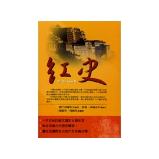 藏文另外的著作史书：公元一三四六年出书的《红史》 ，公元一五六四年的《 贤者喜宴》 ，公元一六一二年的《五世达赖吐蕃王史》，与一八O 一年的《 土观． 宗派源流晶鉴史》 等等史书，都大致同意上述的天降佛经于拉脱脱日年赞普王的皇宫，因而开始传入佛教。
史书大概可靠，不至于乱写，众书一词，更增可信程度，天降佛经宝笈，可能不是神括，也许是佛教徒攀上皇宫顶上抛下的，也可能是佛教徒驾驶风筝从喜马拉雅山飞到皇宫上空，把佛经宝笈投下去，以此故作神秘来作为弘教的开始。可能是因为藏人迷信本教的神通，佛教若要打进西藏，必须先显几个大神通才可以摄服藏王。所以，空投佛经宝笈，我推断不是妄语神话，而是佛教徒精心故弄神通的杰作，果然就把国王唬住了，马上恭敬供奉。倘若佛教先派僧人去弘教，又不弄神通，恐怕就难以奏功了。吊飞风筝在现代是很平常的普及运动，毫无神秘，亦不是现代人才发明，可说是自古已有的玩意儿，也不光是中国的白莲教主徐鸿儒等人才会运用风筝，更早时代的我国人也老早会弄，可能印度佛教徒也有人会作风筝，利用它飞到西藏皇宫上空空投佛经。至于说到国王是普贤菩萨的化身，那就可能是故神其说了，上文引述的“本教教主贤若米保是佛陀化身而去传本教”，也是难以令人置信的，若信它，岂非说“本教”就是佛教？
另外还有一种可能空投佛经，就是驾驶气球飞船飞到皇宫上空，把宝笈投下，并且用扬声筒向地面喊话，许以五代之后当出一个帝王了解佛经的真义。这喊话当然是讲的吐蕃语，否则地面的人怎听得懂？断不可能是讲的梵文！既是藏语，可见广播者可能是藏人或是熟悉藏语者。气球旅行并非现代才有，古代早已有之，山区僻野的乡人早知道如何用油纸或布料做成巨大气球，在底下点燃松香，藉烟火的力量使气球上升，巨大的气球也可以载一个人。中国三国时代诸葛孔明已使用它来作军事用途，俗称为“孔明灯”，其实也非孔明的发明，他是在征服云南之时才学会的。云南的土著民族、瑶族、傣族等等，数千年以来已知使用气球，可能是吐蕃传过来的技术吧？吐蕃的古代文化业不是外界所想像那么落后，他们有他们独特的文化成就，如说有人能驾驶气球飞到皇宫上空去空投佛经，也不足为奇，这种可能性不能遽予排除。
无论它是用上述三种方式任何一种，总之空投佛经的神奇效用已经达到了目的，从此吐蕃君王把佛经供养在宫中。宝笈的文字显然不是藏文，而是梵文，所以无人能识，视之为天书，国王名之为“宁保桑瓦”（密要）。
可是佛教一时未能发展于吐蕃，因为那几百年期间，本教大盛，上自帝王，下至庶民，无一不信奉崇拜自然万物有灵有神的本教，向万神求福驱灾，持念本教的真言咒语以保身及打击敌人，迷信至深，不易摆脱，更不会接受外来的佛教。在上述的拉脱脱日年赞普时代，实际上已有一个来自天竺的僧人，名叫洛桑钰，是他把一些梵文的佛经初次带到吐蕃，是否这位梵僧弄的玄虚空投佛经宝笈于皇宫呢？抑或是他把佛经宝笈呈献给了国王，却因无人认识梵文，国王把它收藏了起来，故意制造神话说是从天而降？这种可能性显然要比气球或风筝空投更合情理。
总之，拉脱脱日年赞普把佛经供奉为秘本珍品，束之高阁，并未将之流通，因为没人看得懂，而且本教势力太大，不容许外来的佛教流传。直到五代君王之后的国王松赞干布（殁于公元六五O 年，生平不详），才开始正式接受佛教，当然也是受到很大阻力的，本教的势力太大，仍然排斥外来的佛教。
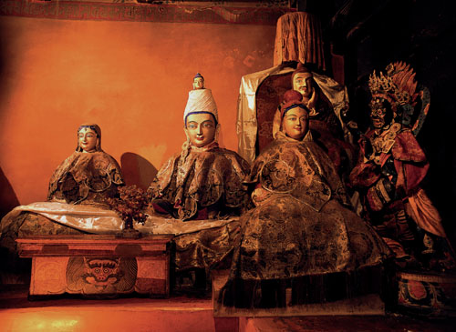 这位国王松赞干布，先后娶了中国唐朝的文成公主与尼泊尔的尼婆罗公主为妃。文成公主是公元六四一年下嫁松赞布干，尼泊尔尺尊公主尼婆罗则更早一点，于公元六三九年嫁给他。两位公主都是虔诚的佛教徒，先后分别把佛教信仰与文物带进了西藏，从此佛教分别从中国与尼泊尔陆续传入。国王也派出端美桑布等人去印度留学，学习梵文与佛经。端美桑布返藏后，创立了藏文，也用他新创的藏文翻译了不少梵文的佛经，开创了西藏以藏文译佛经的风气，当然全是由国王松赞干布支持才得成事。
松赞干布是一个雄才大略的君王，他的武功很盛，兼并了吐蕃各邦。成为统一的国家，而且力排本教，他在文成公主的怂恿之下，建立了大昭寺与小昭寺两座至今仍存在的佛寺。不过，初期的两寺，只供佛像而无僧侣。唐朝的新罗（高丽）僧人慧超和尚从天竺经吐蕃返回长安（公元七二一年），那已在松赞干布国王去世之后的七十一年了。他在他著作《 五天竺国传》 中说：“至于吐蕃，无寺无僧，更无佛法。”由此可见，国王身后，西藏仍无佛教弘扬。文成公主的贡献，大概也只及于将一些佛像及法器带进西藏而已。传说大昭寺今日仍保有文成公主带来的佛像与法器，毕竟只是陈列品而已，在文成公主之世，佛教仍属少数人的信仰，未能取代广大群众与统治阶层的本教。
为什么佛教起先在西藏难以弘扬呢？虽有文成公主以王妃之尊，及松赞干布以国王之权力来推动，佛教仍是不敌本教。因为本教已经根深蒂固，势力庞大，从吐蕃开国君主聂墀赞普开始，三十一代君主均以本教为国教而治国。赞普（国王）的祖先，据称是天神之子，本教如此承认君主的神性地位，君主及贵族亦视本教有降魔的神力，尊重本教的神巫，使之“上祀天神，中兴人宅，下镇鬼邪”，施行各种巫术禳法。据说有三百六十种禳祓法术，八万四千种观想法，八十一种镇魔法，与多种医病之神通巫法，可为人除孽障、为死者超度、指点迷津、决疑解惑、预卜福祸、驱神役鬼、咒诅灭敌、神通复仇、幻游天宫… … 求财求子求福祉… … 凡此皆适合世人欲望。所以佛教在印度已流行千年，仍难以进入吐蕃，佛教的观念与修行方式，是无法为藏人所接受的，后来不得不改弦换辙，容纳本教，才得立足（下文详谈）。但是在容纳之前，佛教与本教是站在对立斗争的地位。
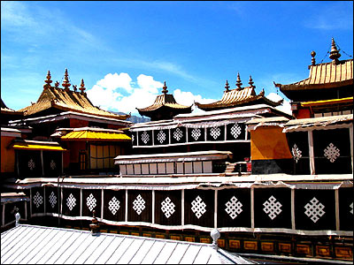 起先，松赞干布与妃子文成公主建造大昭寺，就不断受到本教徒的破坏，“昼日所筑，入夜即为魔鬼摧毁”，松赞干布不得不准许于大昭寺四角画卍形字以娱本教信徒，画方格以娱平民，又画龙王、夜叉、罗刹、鬼王等等，以顺从传统的本教信仰，大昭寺才得以平安完工。大昭寺内的卧佛，传说是文成公主从长安带去的，也被移出大昭寺外面封埋起来。大昭寺内无僧无经，可见本教势力仍是太强，佛教无法弘扬。
松赞干布公元六五O 年去世，到第三代继位者是赤德祖赞（公元七O 四年至七五四年），唐朝再行和亲政策，派遣金城公主下嫁吐蕃的这位新王赤德祖赞，于是国王派出使者赴长安求取佛经，并于札玛的噶菊建立佛寺。不过，佛教仍然不敌本教势力，无法发展。
再下一代的继任君主是赤松德赞（公元七五四年至七九七年）（赤松德赞似乎是金城公主所生之子，未能考证），他就位时年方十三岁，国政全由本教信仰者的贵族掌管，摄政大臣是玛尚寿巴杰，他与本教党人制定禁止佛教，把社会的一切灾难、天然灾祸，全推到佛教上面。他们发动本教徒打击佛教徒及破坏佛寺，而且明令禁止信佛。藏宫后妃不得干政，女子毫无地位，金城公主虽是王妃亦无力护教，幼主赤松德赞年幼无权，虽信佛而不敢公开，在权臣把持之下，他甚至不敢阅读佛经。父王赤德祖赞已逝，生前派赴长安取经的使者巴桑希等四人此时携带佛经与汉僧返回吐蕃，碰上本教势力强盛，朝廷明令禁佛，巴桑希只好把汉僧遣回长安，把佛经藏在深山岩洞。
传说老王赤德祖赞是被本教权臣玛尚寿巴杰下毒毒死的，幼主赤松德赞也险遭毒手，他不得不投法翦除奸臣。在他二十岁之时，发动信佛的亲信大臣，打倒了奸相玛尚寿巴杰，将之活埋及灭族；又流放其同党于北方荒野，这才完全翦除了在朝的本教势力。（见藏文《明鉴》 ，藏人剧曲至今仍有演唱此段故事。… …赤松德赞的“记功碑”大意说：两位大相国生叛逆之心，使父王饮恨归天，王子赤松德赞亦濒危险，蕃境黔首，政事大乱… … 王子终得助拨乱反正… …。）
消灭了奸相乱党之后，巩固了政权，这位年轻的君主赤松德赞才得以安寝无忧。旋即颁令以佛教为国教，派遣使者派巴宝囊（后出家成为喇嘛，法号益西旺布）赴长安取佛经及延请汉僧，他并派青年赴印度与中国分别学习文字与佛学，又邀请印度佛学大师寂护( Santaraksita ）到西藏讲经弘教（藏名Zhi-ba-visho，汉译称为静命大师）。另外，把被本教徒破坏的佛像迎回大昭寺，又兴建桑耶寺，选拔藏人青年出家，开设译经寺院。
赤松德赞国王请印度寂护大师到宫中讲授佛教基本的十二因缘等等，这是西藏君主认真信奉佛教的开始，后来他又迎取莲花生从印度来西藏讲经弘教。
不过，佛教仍未确立基础，本教的势力仍很强大，因为它已深入了民心。
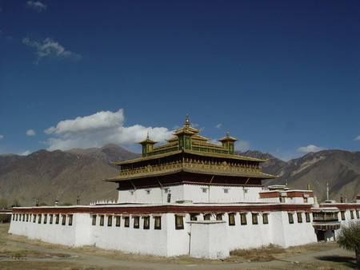 赤松德赞在公元七七五年建成了桑耶寺，桑耶( BSAM-YAS ）可能是地名，也可能是“三羊”开泰之意，成为当年的佛教弘教中心，全由王室控制，开始了政教合一（这是君主控制宗教的政教合一，与近世的喇嘛控制西藏的政教合一不同）。赤松的大力推行佛教，从一方面来看是护教，从另一方面来看，毕竟仍是他要利用佛教来巩固他的统治及推翻威胁他与政权的本教势力，不能算是纯粹的无条件、无所求地保护佛教。桑耶寺的建成，使他更可牢牢掌握了佛教，落成后，他选拔七个优秀青年人出家，称之为“七觉士”（SAD MIMIBDUN ) ── 其中一人是巴拜扬。他是在前朝被派往长安取经的巴桑希之子，这七人后来都成为著名的佛教传法大师，巴拜扬被天竺和尚寂护政经时指定为继承人担任堪师（弘法领袖）。
赞普（藏王）的姨母甲玛氏，与王妃甲茂赞，率领一百名贵族妇女在桑耶寺出家为尼，另外又有三百余人出家，都是小乘说一切有部支派。又有不少从中国来的汉僧来到吐蕃，例如《太平寰宇记》：“德宗建中四年（公元七八三年）夏四月，汉蕃将士僧尼至白沙洲凡八百人。 ”中国内地汉僧把中国佛教传入西藏，特别是把禅宗传入，产生很大影响；它与天竺僧人寂护从印度传人的瑜伽行及中观宗，颇有不同。中国南禅宗主张顿悟成佛，印度佛教主张渐修，后来两派发生重大的斗争。
吐蕃国王，前朝的松赞干布时期只译成《宝箧经》 、《忏悔百拜经》；赤德祖赞时代译了《百叶经》、《金光明最胜王经》，只能算是西藏翻译佛经的开端；真正大规模的译经，是从赤松德赞开始。他下令在桑耶寺设立翻译佛经道场，延请从天竺学成归国的僧人专门译经，把译成藏文的佛经分别存放于三座宫殿，分别编出目录，各以宫殿之名命名，即是著名的吐蕃佛经三大目：“秦浦宫目录”、“龙塘宫目录”与“登迦宫目录”。后来的布顿大师，据以编成藏文的大藏经目录，称为“甘珠尔”，可借秦浦与龙塘两宫的资料已经佚失，至今只传“登迦目录”。不过，即使如此，它被布顿大师收入大藏经甘珠尔目录的也仍有六、七百种之多，分为二十七门类，详列如下（读者千万别嫌它太冗繁，因为这是藏文译经的伟大成就，其中很多是中国佛教译经所绝无的，所以我要把它都抄下来，供给研究者参考）
1 大乘经：般若部
2 大乘经：方广部
3 大乘经：宝积部
4 大乘经：杂部四种
5 大经类
6 大乘经译自汉土者
7 小乘经
8 论着
9 密咒
10 五大陀罗尼经
11广略陀罗尼杂经
12 名号 一O 八种
13 各种礼赞
14 各种誓愿
15 吉祥法门
16 毗奈耶类
17 大乘经疏释
18 大乘经疏释自汉土者
19 中论
20 禅定语录
21 唯识论
22 大乘论部杂录
23 小乘经论
24 思索之宗
25 赤松德赞赞普（国王）之论着
26 校对未完成文本
27 翻译未完成文本
其中第六与十八两项译自自汉土的佛经，合计有三十一种（二十三种经，八种论），另外还有派人至敦煌将汉文佛经译成藏文者多种。
从此一部“登迦宫目录”来看，根据日本学者芳村修基一九五O 年著作，完成年代可能是公元八二四年。
同一时代，还编了一部“梵藏佛教辞典”，称之为《翻译名义大集》 ，是由印度、尼泊尔与藏人三个国家的学者联合编译的伟大成果。全书分二百八十三门类，收入词集多达九千五百六十五条。后世在一八五O 年代，由日本京都帝国大学的神音三郎教授译为日文，流传至今，其后的英文版、法文版都是从此而出。
稍后，藏人学者又编成了藏文汉文对照的佛教词汇集与《瑜伽师地论》 的汉藏对照版本。
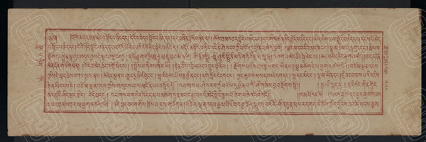
网注：藏文《大藏经》秘密经卷十三：藏文《金光明经》分十卷三十一品、十卷二十九品和五卷二十一品本。前者和后者只见于藏文北京版《大藏经》秘密经中，分别收于秘密经13卷和14卷。所见图为十卷三十一品本，是藏族著名通事法成译自汉文义净本。
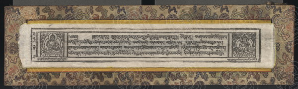
网注：藏文《金光明最胜王经》十卷：藏文《金光明经》十卷二十九品本，是赤松德赞时期著名译师益希德译自梵文，少于十卷三十一品本《菩提树神赞欢品第二十九》和《大辩才天女赞欢品第三十》。此版不仅收于藏文北京版《大藏经》秘密经13中，其单行本也非常之广。所见5206藏品为塔尔寺版，计180叶，7×48.5厘米。十卷二十九品本是汉文中未见的特殊版本。资料来源：中国国家图书馆
从这些事实来看，吐蕃国王赤松德赞大力支持翻译佛经，不遗余力，从上列目录来看，显然比中国的译经更周详缜密，绝非中国君主所可比拟。中国人一向自大，看不起边疆民族，把西藏视为未开化的番邦，假如肯虚心上拉萨的各大佛寺藏经楼巡搜一下。就会知道西藏的经藏宝藏超过中国，更可看到古代吐蕃的文化水准之高，实不应只从片面观察到西藏山地的贫穷而武断西藏文化落后。西藏与中国内地的交往受阻于山岭，但是西藏在古代与西方并不隔膜，其与中亚细亚各邦的沟通． 实在早于中国。
赤松德赞大力支持译经的另一巨大成就，是由于翻译事业的发达而引起新的语词与观念输入，使藏文起了变化。赤松下令编订一部“厘订译语”( SKAD-GSAR-BEAD)，规定标准词语及文法，制定了藏文的标准，从公元八二七年颁行，一直到现代，藏文都变化不大，可说比汉文稳定得多。试想想，汉文从公元八百年到现在变化多大？藏人史家称颂赤松是个贤君，当然不单因为他大力支持翻译佛经推行佛教。
由于赤松德赞宣布以佛教为国教，佛教在西藏渐渐兴盛，本教则日趋衰落。本教徒对佛教发起猛烈的攻击，扬言：“雷劈江山，水淹龙塘，瘟疫流行… … 一切灾祸，皆因是传入了佛教触怒了神灵所致。”本教发动了全民反佛，风潮席卷全藏，以致国王赤松德赞与佛教徒不得不退居劣势；直到他延请莲花生大士来藏，才把情势扭转。
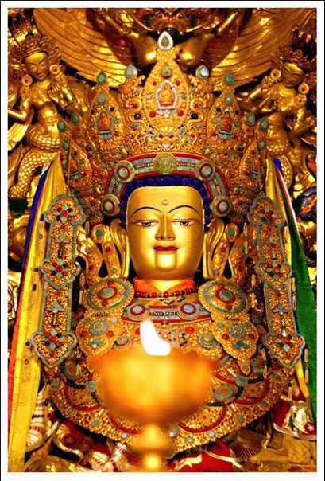 莲花生大士是乌苌国人氏，传说他有巨大神通，慑服了本教的巫师。实际上，莲花生大士是采用“佛教西藏化”政策，吸收了本教的许多东西，融合于佛教之内。他吸收了本教的神祗，视之为佛教的护法神；采用本教的崇拜仪式，使佛教通俗化；他也采用本教的符咒符箓，也赶鬼驱邪，祈福禳灾。他的新作风很快获得良好的反应，替佛教立下了根基，渐渐压倒了本教，而且，佛教经典的思想战胜了缺乏经典的本教。
本教徒在败阵之余，也发起反攻。本教的法师们于是篡改佛教的经典，把佛经内的名字一律改为本教的名字，使之成为本教的经典，把佛教《大藏经》改头换面，称之为本来是本教的“甘珠尔”和“丹珠尔”（大藏经》），又称为“觉本”。例如，将佛教的《 二万五千颂》 改编“康穹”觉本，（瑜伽师地论》改为《本经》，《五部大陀罗尼》改为《白龙经》与《黑龙经》，《广品波若》改为“康动”觉本；又将佛教常讲的“无常”、“因果”、“业力”、“菩提心”、“三身”、“十地”与戒律… … 等等充实本教，使之渐渐接近佛教密教。
国王赤松德赞下令严禁本教篡改佛经，违者处死，但是号令难以执行，因为本教仍有大批的贵族势力及民间力量支持；国王唯有请莲花生大士入藏弘法。善慧法日着《宗教流派晶镜史》内“本教之教理”篇，述及：莲花生大士“收伏藏土诸恶毒天龙”、“调伏鬼神”予以灌顶，令之受三昧耶戒，将他们分为三类，以成为护法神魔。例如：密咒宁玛派的许多护法神、象差、非人驱魔神、猛咒毒咒神、世间供赞宇宙神等等，原本都是本教的神祗，由莲花生大士予以降伏收为佛教护法神。这些自然是故神其说的神话，却反映出莲花生大士很“识时务”，懂得“矛盾统一”，把佛教与本教融合起来，渐而把本教变为佛教的附属，结束了长达两百多年的佛教与本教之间的斗争。直到后来第九世纪，本教徒发动一次残酷的消灭佛教的暴动，由郎达玛领导，几乎杀尽佛徒，佛教再次陷入低潮。又再等到公元十世纪以后，佛教才能再次抬头，并且由于佛教引入了密教才能真正与本教融合，汇成喇嘛教，成为独特的一种宗教，已非佛教原有面貌了。
佛教原始的密宗，传说是由迦叶大士开始，源起于“拈花微笑”。但是开始在印度流传，则是在公元二世纪时代，由龙树菩萨推广。到了公元六世纪，已经很流行，八世纪时代，公元七一六年，印度密僧善无畏到中国长安弘扬密宗，得到唐玄宗至唐德宗一共四代君主的信奉支持，但是到公元九世纪就渐渐衰落了。在唐代四君的一百多年期间，唐朝与吐蕃交往频繁，可能也有些汉僧把密教传人西藏。
西藏的史书之一《 晶镜史》 记载，在公元七六O 年左右，吐蕃国王赤松德赞礼聘乌仗那（今之喀什米尔）密僧莲花生大士入藏弘教（上文已提及），上文只说莲花生吸收本教，此处补充说明，莲花生在桑耶寺投立了“真言州”（密宗学院）, 开始传扬佛教密宗（不过，中国史家多反对此说，不承认是莲花生开始，藏史及西方学者则认为是莲花生首传密宗于西藏）。后又有印度密僧“无垢”与“法称”两人入藏弘传密宗，但史料均不多见。
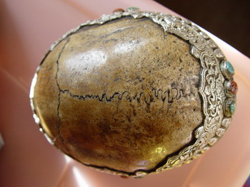 莲花生大士弘密，有顺利的一面，是因为真言密法的咒言仪轨近似吐蕃本教，容易为藏人接受，也容易与本教融合为一体；但是也有遇到不少阻力；首先最主要的反对者，就是国王赤松德赞的正妃才邦（皇后）。她斥责密宗：“所谓嘎巴拉，就是死人头骨，所谓巴苏大，就是掏出来的死人内脏，所谓冈凌，就是用死人胫骨做的号角，所谓兴目央希，就是铺开的一张人皮，所谓罗克多，就是供桌上洒用的人血，所谓曼陀罗，就是纹身虹彩，所谓金刚杵士，就是人骨做的花环武士…… ”她指斥那不是真正的佛法，只是从印度传入的邪教（见藏文著作《贝玛噶塘》 一书的英译本，第七十九章），但是皇后的反对无多大作用，赤松德赞要利用莲花生对抗本教，他还是大力支持莲花生的密教。不过翻译密法经典很少见，可能是因为密教注重秘密修持、秘密传授，少有论着，这是与显教不同的。
密教在西藏的发展发扬，是在公元十世纪中期左右，由宝贤上师（仁钦桑波）赴印度学密，及请印度超行寺名僧阿庇峡入西藏传密才蓬勃起来，最盛的是“瑜伽密”与“无上瑜伽密”，密教在西藏从此大大兴盛，密教经典也渐渐被译成藏文，列入西藏《大藏经》内。西方学者认为，从北印传至西藏的密教已经是与印度教混合，已非释迦牟尼所传的原始佛教了。它后来又与西藏的本教结合，成为喇嘛教，其实已非“原始佛教”，而是“混合的佛教”了。那是西藏独特的宗教，它与原始佛教、中国佛教、南传佛教等等都有很大的差异，大概就是适应各地不同的文化及社会背景而产生的变化吧！很难用另外的民族文化、道德标准去妄下评语的。
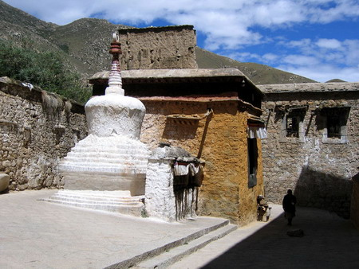 显宗佛教比较偏重理论，以致钻入牛角尖，流为繁哲学，变为少数佛学理论家研究（只有禅宗比较少讲理论，但却又时尚讲究禅语禅谜，难以为一般大众接受）。密宗不尚繁琐哲学与教理，只要一心持诵六字大明咒及其他密咒，不须求解释，只须供花敬佛，依照仪轨拜佛及静坐，就可成佛，法门简便容易，而且又容许神通、不禁婚姻、不忌荤腥、戒律简单，所以容易流传弘扬，非但为西藏所接受，也广为现代的西方社会所欢迎。在今天的西方社会，藏密的弘教活动与信徒人数，远超过中国佛教的显宗不知几千几百倍！显宗崇尚的深奥教理与文字，虽然很高超，却是弘法最大的绊脚石；显宗的戒律过于森严，束缚了人类本能本性，也不是现代自由人所能接受的。因此中国佛教显宗的教法与理论理论，渐渐只能成为学府的研究，而难以普及。长此以往，势必成为博物馆的陈列品而已。（本文无意捧密贬显，只是就事实而论。）
密教是法身佛大日如来（毗卢遮那佛）所说的奥秘大法，用隐语、咒语、真言、秘密传授（与显教禅宗的禅语暗示有所不同，藏文称为“桑仪”（真言宗、金刚乘），着重实践，从持咒、作法、供养、护摩等等宗教仪轨而进入禅定。经过上师（阿阇黎）的灌顶及秘密传授，就可即生成佛，不必累世苦修，更不必苦啃大量的经典。它以神秘信仰代替繁琐的显宗教条，这样的简便，又有与本教相近的神通法力；又不需守太多戒律，至少是不须戒色欲；戒杀也只限于戒杀人，不必戒杀牲口，也没有限定必须吃素不能吃肉。这些都是比较接近人性的，不脱离现实，不唱高调，也不像显宗那样视神通为蛇蝎而禁讲神通。密教有许多特点，非但为藏人所容易接受，时至今日，也证明是普遍受到西方社会接受的。它受世界欢迎远远超越中国佛教显宗，这是不争的事实。
显宗的高骄姿态──禁欲、禁食，戒律太多、太严，教理太深、名相太多、分析太繁琐，是曲高和寡的。密教的“即生成佛”的速成与简便，又不需放弃世俗的享受，它的世俗化，及它能并容泛神，吸收本教，非但适合了古代的西藏社会需要，也以它的神秘而且又世俗化而流传于今日的西方与东方。至于它近乎野蛮民族的迷信祭器与法物，例如人骨璎珞、骷髅头壳香炉之类，也都被接受为正当的庄严法物了。当年西藏皇后的叱责毫无用处，今世的任何批评也是徒劳无功，丝毫不会损害密教；在密教的解释，是说这些死人骨做的法器是含有警戒的深意，可以使人警醒而不沉迷于人生的苦乐。
此外，密教主张“我即法骨，我即是毗卢遮那佛”、“佛即是我”，这些概念，使得佛性人格化，它修本尊佛则是以主观道直接施教而形象化。它的泛神崇拜与偶像崇拜，是违反原始佛教的，但是给予信徒形象化与具体化，不再是抽象化，使人觉得佛并非高不可攀，而是容易亲近的“神”。再进一步地，由对佛像的崇拜而变为对“活佛”与“喇嘛”的崇拜，这就更世俗化了，世人大多数不能接受无色、无想、无形、无体的佛菩陡或上帝，必须接触到有形相有实体的神祗，才感到真实。活佛之应运而兴，正由于此。
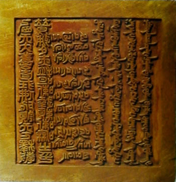藏语称活佛之音为“阿拉合”（可能来自梵藉阿罗汉），又称“朱古”。活佛转世再来，是西藏佛教的特有制度。喇嘛教认为，活佛、大喇嘛修行已到了最高境界，断除了妄想，证得菩提心体，入灭后不昧本性，不须随业力轮回，可以自在往生，可以随意再来人间再接其位。活佛转世制度，却不是从印度开始，而是在西藏的喇嘛教噶举派噶玛巴支派所发明。
在此之前，各派别的喇嘛活佛传承，有些是师徒相传，有些是贵族世袭称为法王，政教合一，宗法世袭制度与宗教世袭合而为一成为统治特权阶级。到了中国元朝，公元十二世纪后期，噶举派的噶玛巴支派形成，其第二代宗师活佛噶玛拔希却吉喇嘛，曾被元帝忽必烈召见授与金印及赐与活佛尊号，他于公元一二八三年（即元朝至元二十年）逝世，该派就以其继承人为转世的活佛，称为三世活佛，从此世代均以转世继承，各派群起仿效，成为西藏普遍的转世制度。十五世纪之初，宗喀巴创立黄教，公元一四一九年他逝世之后，仍是以衣帽传位；到了一五四六年，哲蚌寺活佛根敦嘉错死后，才开始传位给三岁的转世灵童锁南嘉错，这才开始了黄教的转世制度。公元一五八O 年，锁南在青海受到蒙古汗王俺答汗册封名号为“嘉瓦仁波切”，以后世代沿用此一尊号及转世制度。再经过二百多年，在一六三九年得到蒙古的支持，取得对西藏全国的喇嘛教领导地位。
一六五二年，清朝政府颁赐嘉瓦仁波切五世以“西天大善自在佛嘉瓦仁波切”之尊号。五世喇嘛以政教合一，取代了吐蕃的皇帝统治，喇嘛教已发展为宗教、政治、经济的结合实体了。
图片出处
纳木错湖
小昭寺
大昭寺
西天大善自在佛嘉瓦仁波切之印
原载《佛乘世界》第13期：1998年8月15日